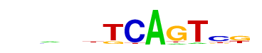
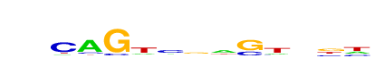

| p-value: | 1e-57 |
| log p-value: | -1.326e+02 |
| Information Content per bp: | 1.605 |
| Number of Target Sequences with motif | 329.0 |
| Percentage of Target Sequences with motif | 19.12% |
| Number of Background Sequences with motif | 3198.3 |
| Percentage of Background Sequences with motif | 7.00% |
| Average Position of motif in Targets | 52.9 +/- 17.5bp |
| Average Position of motif in Background | 50.0 +/- 36.8bp |
| Strand Bias (log2 ratio + to - strand density) | 10.0 |
| Multiplicity (# of sites on avg that occur together) | 1.04 |
| Motif File: | file (matrix) reverse opposite |
| Rank | Match Score | Redundant Motif | P-value | log P-value | % of Targets | % of Background | Motif file |
| 1 | 0.961 | 1e-53 | -122.038882 | 23.59% | 10.34% | motif file (matrix) | |
| 2 | 0.773 | 1e-52 | -120.764880 | 10.58% | 2.57% | motif file (matrix) | |
| 3 | 0.832 |  | 1e-49 | -112.881115 | 11.21% | 3.06% | motif file (matrix) |
| 4 | 0.913 | 1e-31 | -72.897686 | 18.42% | 9.03% | motif file (matrix) | |
| 5 | 0.802 | 1e-27 | -64.466080 | 16.79% | 8.31% | motif file (matrix) | |
| 6 | 0.661 |  | 1e-25 | -58.622806 | 31.90% | 20.79% | motif file (matrix) |
| 7 | 0.652 | 1e-13 | -31.573925 | 12.84% | 7.46% | motif file (matrix) | |
| 8 | 0.698 | 1e-12 | -29.134615 | 8.60% | 4.45% | motif file (matrix) | |
| 9 | 0.659 | 1e-10 | -23.652128 | 4.71% | 2.05% | motif file (matrix) | |
| 10 | 0.654 | 1e-7 | -16.142718 | 4.82% | 2.54% | motif file (matrix) |